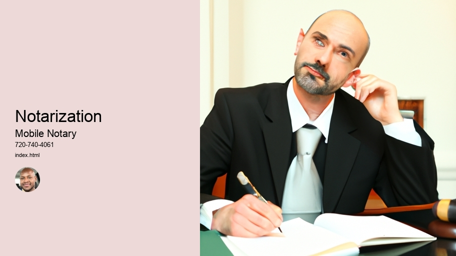

News
Notarization
Notarization
Notary Seals Stamps
Apostille Certificates
Certification of Documents
Authentication of Signatures
Verification of Identities
Affidavits and Oaths
Witnessing of Signatures
Travel Fee Reimbursement
Anotarization Fees
Power of Attorney Verifications
Mobile Notary Services
Mobile Notary Services
Remote Online Notaries RON
Video Conferencing
Electronic Signature Platforms
Digital Document Management
Document Scanning
Travel Fee Reimbursement
Mobile Printing
RealTime Document Tracking
MultiState Compliant
Background Checks
Signing Agents
Signing Agents
Notary Publics
Notary Publics
Jurats
Jurats
About Us

Notarization
Notarization
Notarization (is) an important proces(s) that can be used to verify the authenticity of a document. It's done by notary publics, who are specially trained and licensed individuals. Notarized documents serve as proof (that) they have been reviewed and signed off on by an impartial third-party. This helps to protect against fraud or other misuses of documents.
However, (it is) important to note that notarization alone does not guarantee the validity of a document. While it can provide some additional protection, it's still possib(le) for false or forged documents to be accepted with notarization. Therefore, it's important to take extra steps when necessary in order to ensure accuracy and prevent fraudulent activity!
Nowadays, technology has made the process of notarization much easier. Electronic tools such as e-signature platforms can allow all parties involved in a transaction to securely sign off on documents without having to leave their homes or offices. Additionally, these platforms record timestamps and other data that prove the authenticity of each signature - making them even more secure than traditional paper-based methods!
In conclusion, while notarization provides added security against fraud or misuse of documents, it is only one part of ensuring accuracy when dealing with legal matters. Technology has made this process easier and more secure than ever before - allowing people around the world to complete transactions quickly and safely!
Notary Seals Stamps —
Notarization
Notary Seals Stamps
Apostille Certificates
Certification of Documents
Authentication of Signatures
Verification of Identities
Affidavits and Oaths
Notary seals and stamps are an important part of legal documents. They serve as a way to authenticate documents, ensuring they are legitimate and legally binding. Notary seals and stamps help protect people from fraud (and) forgery, as well as provide assurance that the document is valid.
Moreover, notaries must use appropriate seals and stamps when performing certain duties such as verifying signatures on affidavits or taking acknowledgements. The content of the seal or stamp may vary depending on state requirements, but usually includes the notary's name, expiration date of their commission, county where they are commissioned, and sometimes even a registration number.
Furthermore, a variety of materials can be used to create these seals and stamps. A common option is rubber for its durability (and) cost-effectiveness. However, there are other options available including self-inking stamps which make it easier to apply the seal multiple times without having to re-ink them each time. Additionally, embossers can also be used which produce raised images instead of ink pressed onto paper for a more professional look!
Ultimately, notary seals and stamps serve an important purpose in legal documents by helping verify authenticity and legitimacy while protecting individuals from potential fraud or abuse. Without them it would be difficult to guarantee that documents were genuine making them an invaluable tool!
Apostille Certificates
Apostille certificates are documents which have been officially signed and verified by a relevant authority, such as a court or government agency. They are used to authenticate foreign public documents so that they can be accepted in other countries. (Though it may sound complicated,) obtaining an Apostille certificate is actually quite simple! With the correct paperwork in place, all you need to do is fill out a form, pay the required fee and submit it to the relevant office for processing.
However, there are some exceptions – not every document requires an Apostille certificate. For instance, if you're travelling abroad for business purposes your passport will suffice as a form of identification. On the other hand, if you're hoping to get married overseas then an Apostille certificate would be needed as proof of identity and age.
Moreover, different countries have their own set of requirements when it comes to issuing Apostilles; so make sure to check with the embassy beforehand! It's also important that you use only authorised apostilles services provider - otherwise your application could end up being rejected!
Therefore, (if you're planning on travelling abroad) it's always worth double checking whether or not an apostille certificate is necessary prior to departure. That way you can save yourself time and aggravation further down the line!
Plus, bear in mind that acquiring one does take some time - usually around two weeks - so leave plenty of advance notice before embarking on your trip. All things considered, getting hold of an apostille certficate doesn't have to be difficult; just make sure that you adhere to all necessary procedures and don't forget any important steps along the way!
Exclamation mark!
Authentication of Signatures
Authentication of signatures is an important process for verifying the genuineness of a signature. It involves (conducting) a comparison between (the) two signatures and determining if they are from the same person or not. The whole process includes several steps, including document examination, evaluation, and comparison.
Firstly, document examin(ation) takes place to identify any discrepancies in the information on the documen(t). This includes checking whether all forms have been properly filled out and signed. Next, evaluat(ion) is done to analyse the physical characteristics of both signatures and determine if they match up. Here specialised techniques such as handwriting analysis and fingerprint comparison come into play. After that comes comparis(on), where all details related to both signatures are compared in detail to make sure that they are identical or at least very similar! In conclusion, authentication of signatures is an essential step in ensuring that documents are authentic and reliable. Consequently, it should be conducted carefully by professionals who possess expertise in this area! Nevertheless, with new technologies emerging every day, there is always more room for improvement when it comes to authenticating signatures.
All in all, authentication of signatures can help us protect our identities and ensure that we do not get scammed or taken advantage of by fraudulent activities! To sum up: Authentication of signatures is an immensely important process which must be carried out accurately for maximum security!
Verification of Identities
Verification of identities is a process that requires an individual to prove their identity. It (is) used by organizations and businesses to ensure the person they are dealing with is who they claim to be. This process can take many forms, and each has its own level of security. For instance, some organizations require a valid photo ID, while others may ask for additional information such as bank statements or proof of address.
The goal of this process is two-fold: Firstly, it helps protect the organization from fraud or identity theft;Secondly, it helps protect the consumer from being taken advantage of by those attempting to steal their personal information.
In order to verify someone's identity, there are several methods that may be employed. These include asking for documents such as a driver's license or passport, performing background checks on individuals using publicly available records, or even utilizing biometric measures like fingerprints and facial recognition technology. Each method comes with its own advantages and drawbacks, so it's important to consider which one best suits your needs before making any decisions.
Furthermore, verification of identities must also take into account other factors such as cultural sensitivities and privacy concerns. For instance, in some cases it may be necessary for individuals to provide additional documentation beyond what would normally be required in order to prove their identity due to cultural reasons or religious beliefs. Additionally, depending on the situation certain data sets may need to remain confidential in order (to) maintain customer trust and privacy regulations.
Overall, verifying someone's identity is an important step for any business or organization looking to protect itself from fraudulent activity and ensure customer satisfaction! It involves assessing risk levels associated with different methods used for identification purposes as well as ensuring compliance with applicable laws and regulations. Thusly ,it constitutes an essential part of any security system aiming at keeping people safe!
Travel Fee Reimbursement
Anotarization Fees
Power of Attorney Verifications
A Power of Attorney (POA) Verification is an important step in ensuring that all parties involved are protected. It's a process for verifying the legitimacy of the document being signed and making sure that it is not invalidated by any legal issues or errors. It can be a complex process, but it is essential for securing rights and responsibilities during transactions or other legal proceedings.
However, there are some potential pitfalls to be aware of when conducting these verifications. First, POA documents must be properly executed by both parties; otherwise they could become void or unenforceable. Additionally, if the document isn't validly witnessed or notarized then it may not be accepted as legally binding by courts. Furthermore, it is also worth noting that errors in the wording of documents can lead to them being deemed invalid and result in costly delays in processing paperwork.
Therefore, it is critical to ensure accuracy with Power of Attorney Verifications. This includes double-checking all information included on the document for typos and basic mistakes as well as confirming its validity through witnesses or notaries before signing off on anything. Moreover, if there are any changes required then those should be made prior to signing so that all parts agree with each other! Finally, make sure you keep an original copy of the document somewhere safe just in case something goes wrong down the line. All in all, taking proper care with POA Verifications will help save time and money in the long run!
Frequently Asked Questions
What is Mobile Notarization?
Mobile notarization is a secure electronic process that allows documents to be notarized remotely over an audio/video connection, eliminating the need for an in-person meeting between the notary and signer.
How does Mobile Notarization work?
The notary will use a secure video platform to meet with the signer online, verify their identity and witness them signing the document. Once this is complete, the document is electronically signed and notarized by the notary.
Is Mobile Notarization legal?
Yes, mobile notarizations are legally recognized in most states and countries around the world.
Notarization